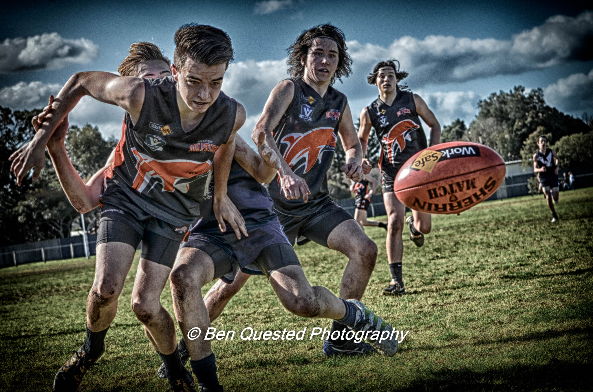
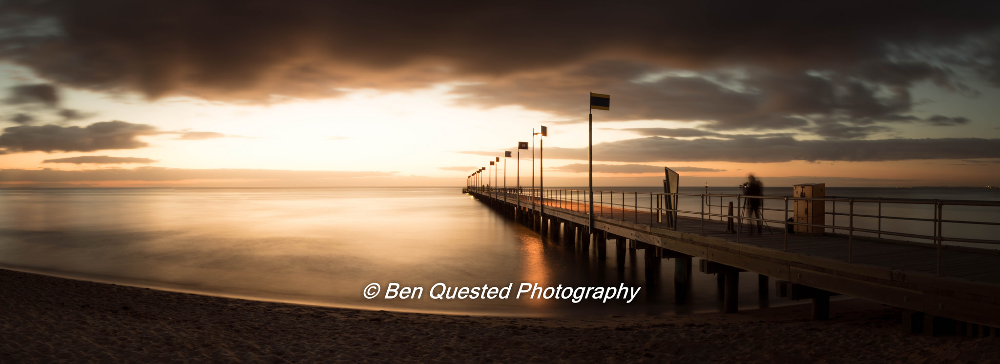

Hometown - Frankston
Ben has lived all of his life in Frankston South, a town about 45 kilometers south of Melbourne. He grew up in a small house with his parents, before moving at the age of 2 to a larger house in Sibyl Avenue, due to the birth of his brother, and the need for more space. Ben has spent a lot of time in the central district of Frankston, mainly photographing the beach, visiting friends, or shopping. The iconic pier at Frankston Beach is one of Ben's favourite places to photograph, and features in many of his photos.
Ben has also been invloved with the local Frankston Dolphins Football club, despite not playing football. Starting off with delivering water to players, Ben then began to take photos of first his brothers teams, and then began paid work as a photographer for other teams playing for the Frankston Dolphins. He also photographed social events for the club, and worked in the Club canteen for a year.
Due to Ben living so close to the boarder of Mt. Eliza and Frankson, Ben attended High School in Mt. Eliza. However, his Primary School was located in Frankston, as are many of his friends. Frankston's weather typical Melbourn weather, very cold in the winter and too hot in the summer.
 